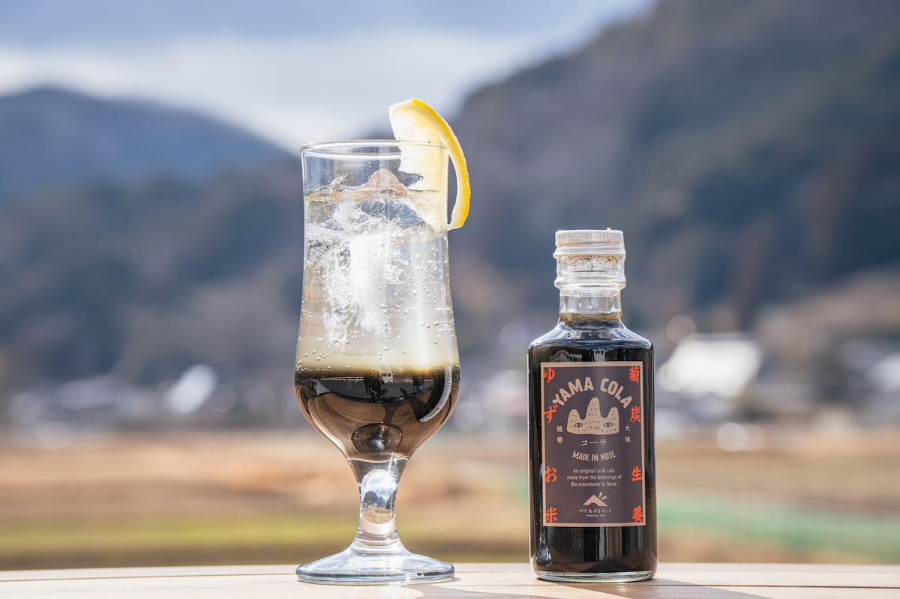
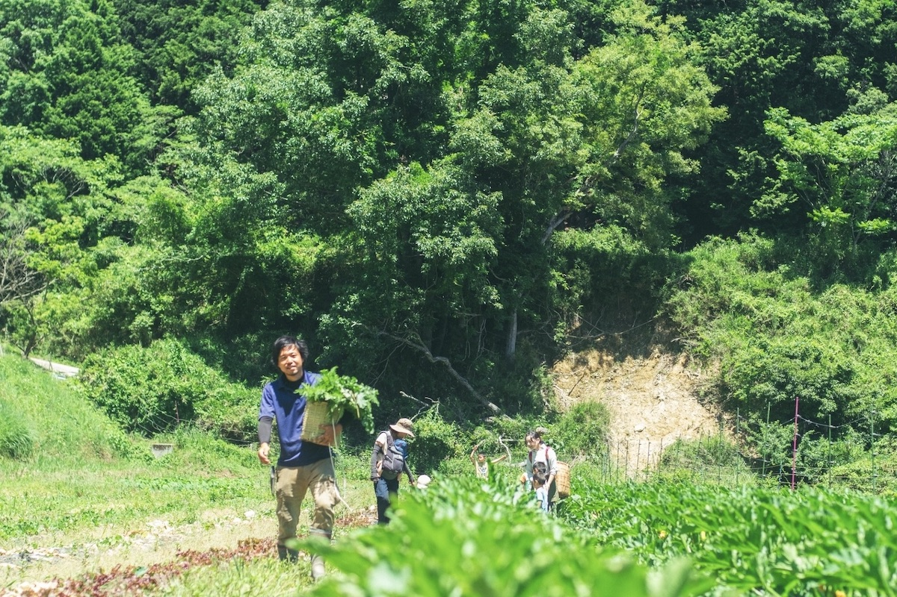
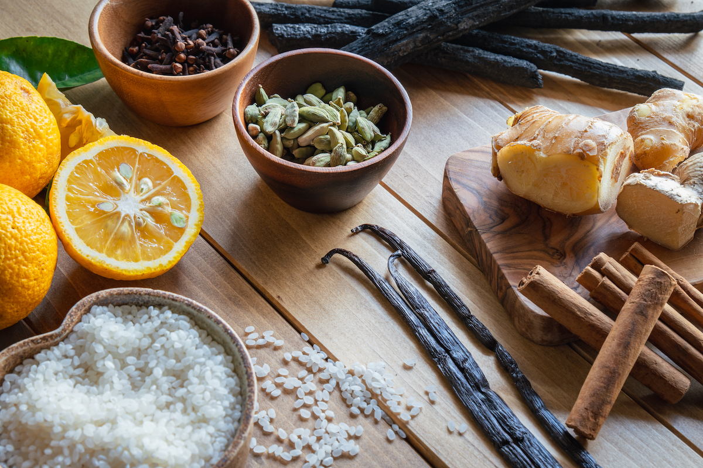
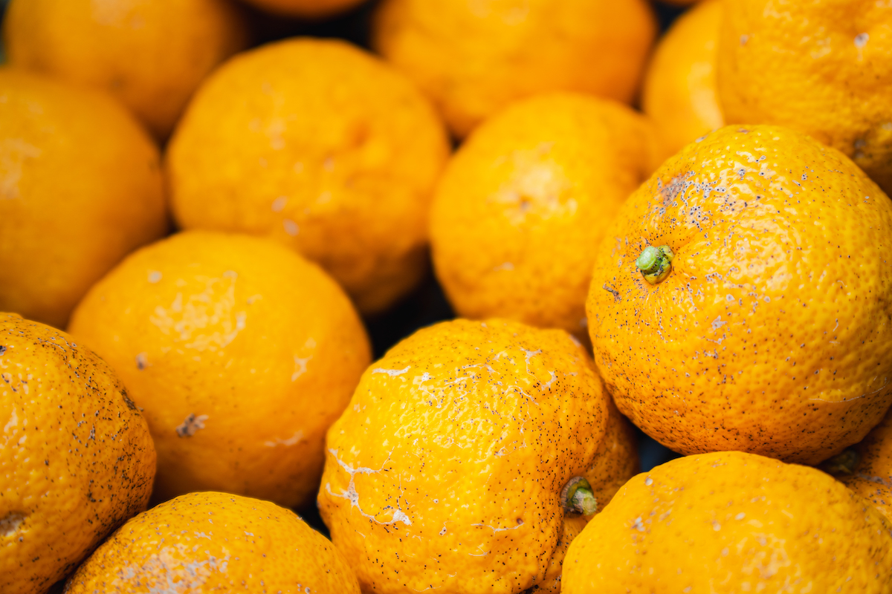
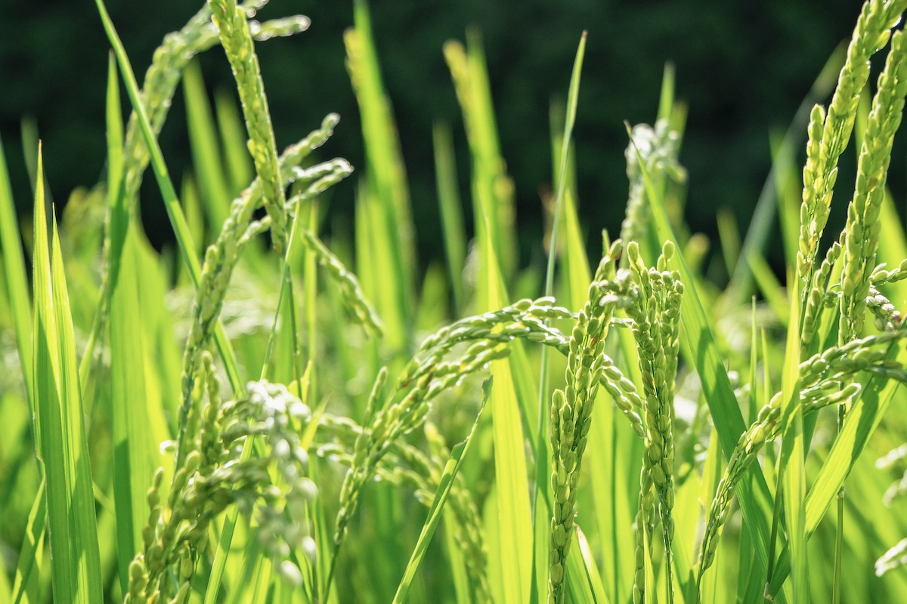
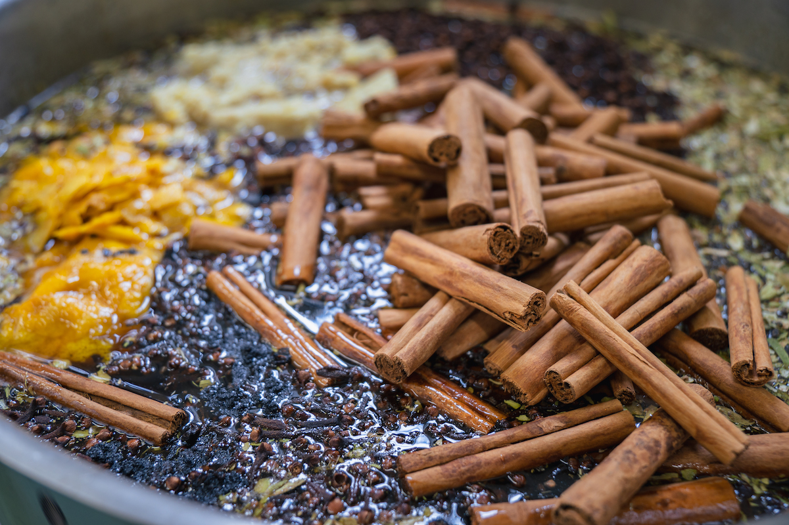
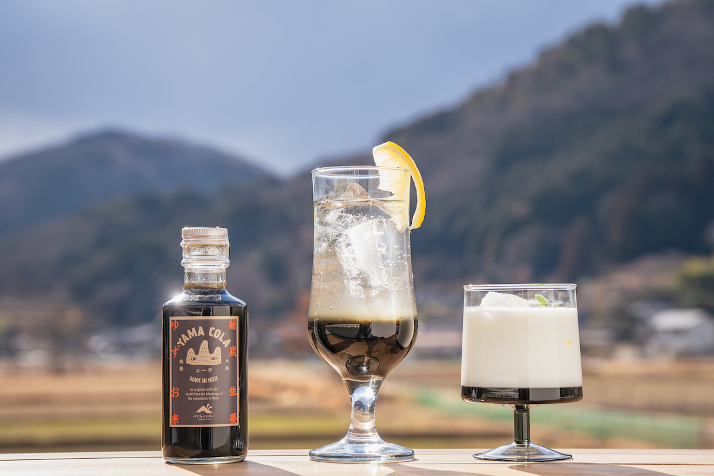
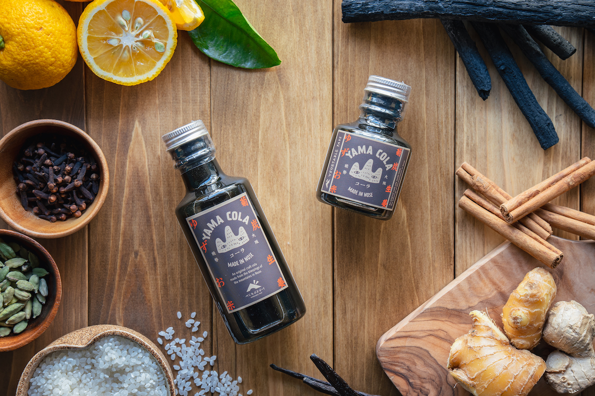

Префектура Осака · Носэ · еда
«Яма-кола» из Носэ: крафтовая кола из юдзу, имбиря, риса и древесного угля

Носэ, горный городок на самом севере префектуры Осака, известен каштанами, юдзу и древесным углём. Местная ферма собрала эти дары гор в бутылку и назвала её «Яма-кола», то есть «горная кола».
Ферма
Кто делает «Яма-колу»
«Яма-колу» придумали и продают на ферме «Веджитабл парк» в Носэ. Здесь выращивают от 60 до 80 видов культур в год. Ферму ведут супруги, которые переехали в Носэ и занялись земледелием. Их девиз «Овощные открытия!»: каждый день они ищут новые способы вырастить овощи, новые рецепты и новые причины их полюбить и рассказывают об этом покупателям.
Кола получилась лёгкой и чистой на вкус, и её быстро полюбили. В её основе четыре продукта Носэ: древесный уголь кикудзуми, юдзу, рис и имбирь.
История
Неурожай каштанов и урожай юдзу

На ферме растёт и местный брендовый каштан «гинъёсэ», и варенье из него хорошо продаётся. Но осенью 2021 года каштаны почти не уродились, а соседи заговорили о том, что деревья начали сохнуть, возможно из-за потепления. Зато юдзу в тот год дала огромный урожай. Хозяева фермы поняли простую вещь: в горах всегда что-то не удаётся, а что-то родится в изобилии, и даров у гор много. Вместо того чтобы горевать о каштанах, они решили по-новому показать то, что дают горы Носэ. Так появилась идея колы.
Магазинная кола дешёвая, но её составу хозяева не доверяли. Их дети тоже любят колу, поэтому хотелось сделать её из местных продуктов и понятных ингредиентов. Название «Яма-кола» отражает желание фермеров: сберечь любимые горы и поделиться их дарами со всеми, чтобы люди стали чуть счастливее.
Состав
Четыре дара гор Носэ

В «Яма-колу» не добавляют консервантов, ароматизаторов и красителей. Специи для неё выбирают только органические, а главную роль играют местные продукты, которые, как считают на ферме, помогают телу очиститься.
Уголь кикудзуми
Кикудзуми это известный продукт Носэ, уголь из дуба кунуги. Своё название, «хризантемовый уголь», он получил за срез, похожий на цветок хризантемы. Срубленный кунуги снова и снова даёт поросль, поэтому производство угля помогает лиственному лесу разрастаться. Лес лучше держит воду, а значит, чище становятся реки и море.

Юдзу
В горном климате Носэ дни тёплые, а ночи холодные, и юдзу вырастает очень душистой. В ней много витамина C, а в аромате есть лимонен: он поддерживает иммунитет, улучшает кровообращение и увлажняет кожу. В «Яма-колу» щедро кладут юдзу, выращенную в горах Носэ без пестицидов.

Рис
Рис сорта «Кинухикари» растёт в Носэ на чистой воде и чистом воздухе. Здесь издавна делали из него рисовый солод кодзи и готовили на нём мисо и сладкий напиток амадзакэ. В колу добавляют именно амадзакэ: в Японии его за питательность называют «капельницей, которую пьют».
Имбирь
Имбирь с его жгучей остротой и свежим ароматом помогает пищеварению, усиливает потоотделение и ускоряет обмен веществ. Для «Яма-колы» берут собственный имбирь фермы, выращенный без пестицидов.
Рецепт
Вкус довели до ума вместе с поваром

Фермеры хотели, чтобы в коле было много продуктов Носэ, но вкус оставался свежим и чистым, как у настоящей колы. Рецепт они дорабатывали долго и в итоге позвали на помощь повара, который тоже живёт в Носэ. Раньше он работал в итальянском ресторане, а потом основал собственный бренд: придумывает продукты, рецепты и меню и помогает людям, которые делают еду, донести её до чужого стола. Под его руководством местные продукты и органические специи сложились в один цельный вкус.
Как пить
Не только с газированной водой

Проще всего развести сироп газированной водой. На ферме предлагают и другие варианты.
Кола-латте. Одна часть сиропа на 4–5 частей молока или соевого молока. На вкус напоминает чай масала, пить можно холодным и горячим.
Горячая кола. Одна часть сиропа на 4–5 частей горячей воды. В «Яма-коле» много специй и имбиря, поэтому горячей она особенно хороша.
Кола-хайбол. Одна часть сиропа, одна часть виски и три части газированной воды. Виски подойдёт любой.
Кола-флоат. Обычную колу с газированной водой накрывают шариком мороженого. Главное положить побольше льда и опустить мороженое прямо на лёд.

В 2022 году большая бутылка на 600 г стоила 2 592 иены, средняя на 240 г 1 296 иен, маленькая на 120 г 864 иены. Сироп хранится год со дня изготовления. В составе нерафинированный тростниковый сахар с острова Танэгасима, сок и цедра юдзу, амадзакэ из риса Носэ, имбирь из Носэ, порошок угля кикудзуми, а также органические корица, кардамон, гвоздика, ваниль и мускатный орех. Такую колу спокойно пьют и взрослые, и дети.
«Яма-кола», ферма «Веджитабл парк»
- Адрес
- префектура Осака, уезд Тоёно, Носэ
- Цены / Вход
- 600 г 2 592 иены, 240 г 1 296 иен, 120 г 864 иены